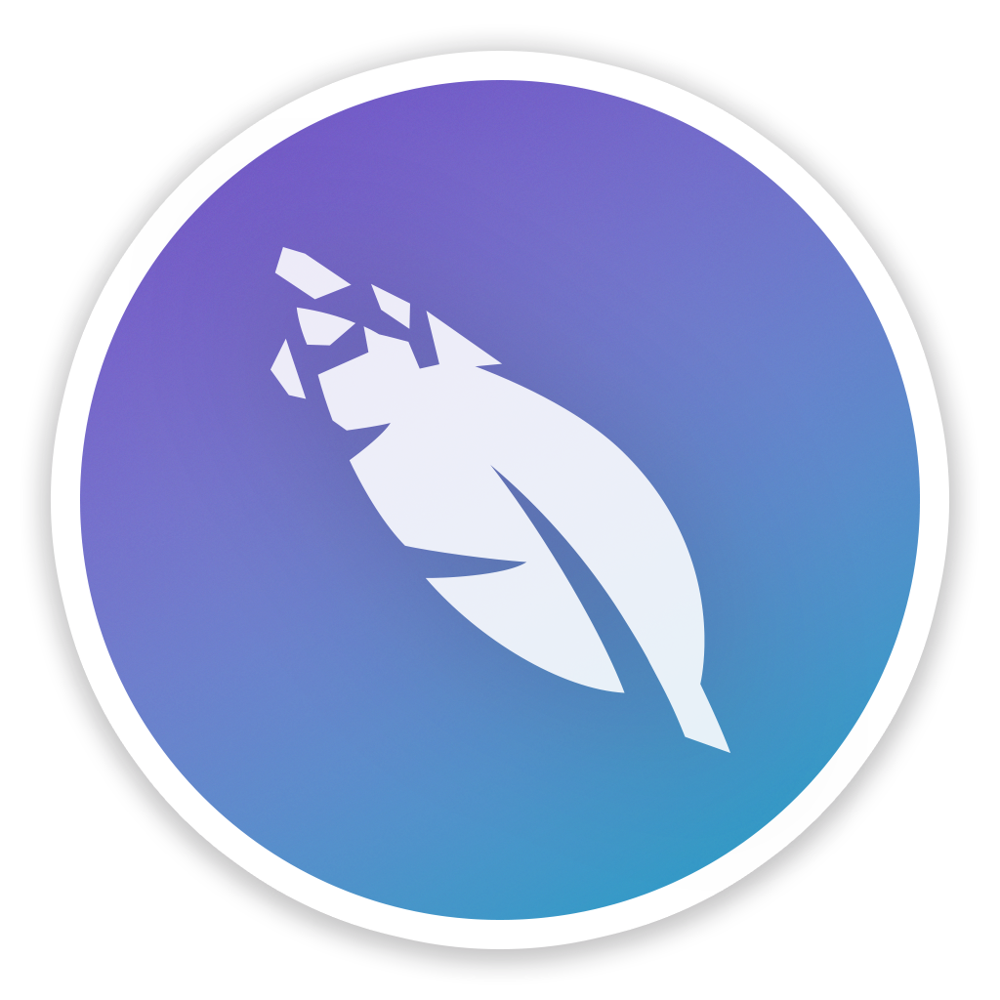
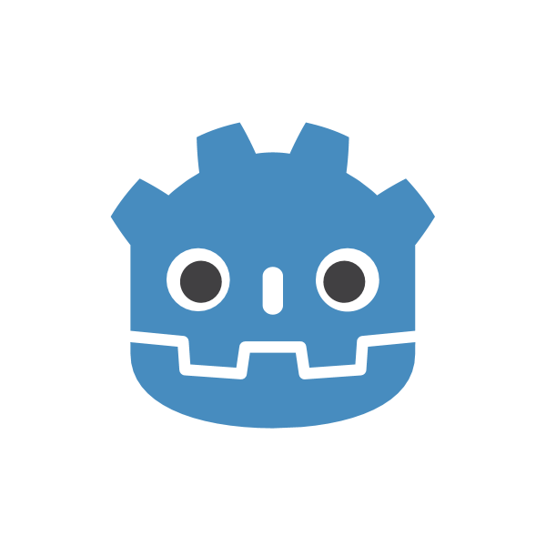

Hello, I'm Kris🙌🏽
Welcome,
I'm excited to share this personal project with you—a small showcase of my skills in HTML and CSS. Here, you'll find an overview of my current expertise and learn a bit about who I am. If you're interested in exploring my work, feel free to visit my GitHub. For any inquiries, you can reach out through LinkedIn or email.
Thanks for visiting!

Skills
During my time as a computer science student, I've worked with a range of tools and programming languages, using them in different projects and learning experiences.

SQL

Godot Game Engine
About Me
"My journey into the world of computer science began during my sophomore year of high school.
It was then that I found myself enrolled in a computer science class,
a decision that would profoundly shape my academic and career path. As I delved into the
fundamentals of programming I discovered a deep-seated curiosity
about the inner workings of computers and software systems.
Since then, my passion for computer science has only grown stronger. I am driven by a desire to understand
and harness this knowledge to innovate and create impactful solutions.
Choosing to pursue a degree in Computer Science was a natural decision for me. It aligns perfectly with my
interests and aspirations, providing me with the opportunity to delve deeper into the fascinating world of
programming."